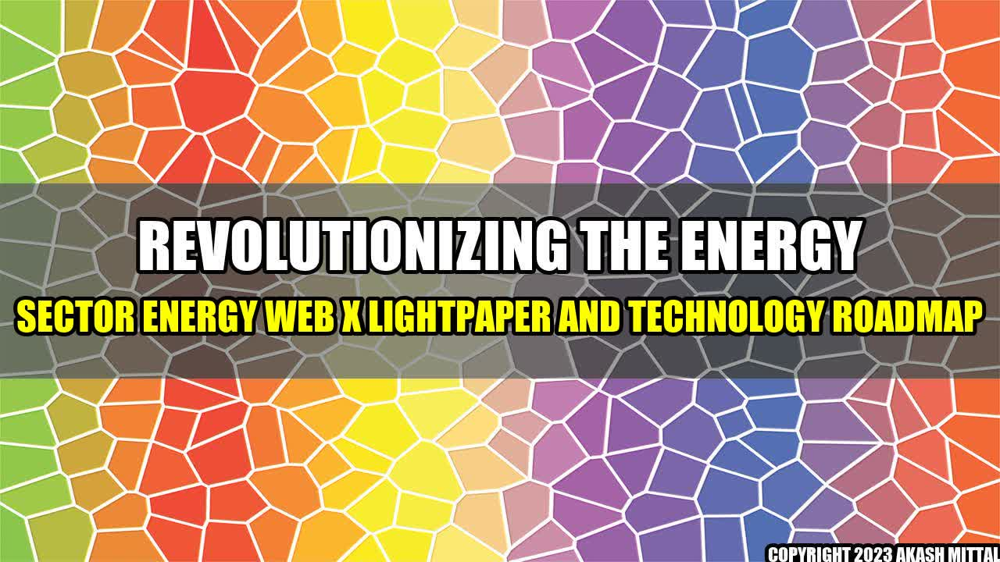

Revolutionizing the energy sector: Energy Web X Lightpaper and Technology Roadmap

Imagine a world where clean and affordable energy is accessible to everyone. It's not a far-fetched idea, but a reality that can be achieved with the help of Energy Web X (EWT) technology.
Energy Web X is a decentralized, open-source blockchain platform that connects the energy industry with blockchain technology. It aims at accelerating the global transition towards a decentralized low-carbon energy system, making it more reliable and secure.
The EWT team recently released the Energy Web X Lightpaper and Technology Roadmap, which outlines the platform's vision and future development plans. The document is a must-read for energy enthusiasts, technology enthusiasts, and investors alike.
Concrete Examples
Here are some concrete examples of how Energy Web X is revolutionizing the energy sector:
- The platform enables peer-to-peer energy trading, which means that energy consumers can buy and sell energy between themselves without relying on a central authority. This creates a more democratic, decentralized energy system that benefits everyone.
- Energy Web X allows for the creation of digital identities for energy assets such as solar panels, wind turbines, and batteries. This makes it easier to track energy production and consumption, and ensures that renewable energy gets the credit it deserves.
- The platform supports smart contracts, which automatically execute transactions once certain conditions are met. This makes it easier to automate tasks such as billing, and improves efficiency and accuracy.
Conclusion
Here are the main takeaways from the Energy Web X Lightpaper and Technology Roadmap:
- Energy Web X is a powerful technology that enables a decentralized, democratized energy system.
- The platform is continuously evolving, with plans to integrate new features and protocols in the future.
- The future of energy is bright, and Energy Web X is at the forefront of this revolution.
References and Further Reading
Here are some helpful resources to learn more about Energy Web X:
Hashtags
#EnergyWebX #blockchain #energysector #decentralization #renewableenergy #smartcontracts
Article Category
Technology/Blockchain/Energy
Author
Akash Mittal
Akash Mittal Tech Article
Share on Twitter Share on LinkedIn